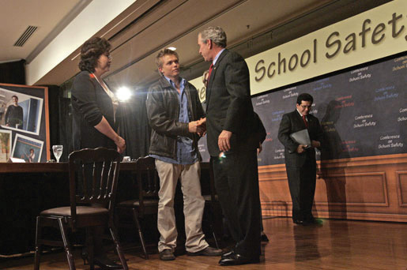
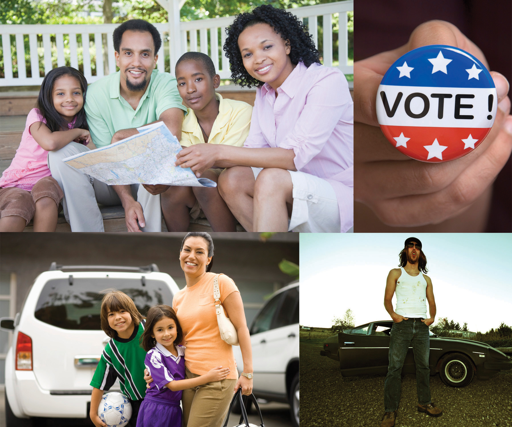

After reading this section, you should be able to answer the following questions:
The media are central to political participation and mobilization. The public uses all forms of media to express opinions, contact leaders, and engage in politics. Journalists, pollsters, and political consultants create media depictions of peoples’ participation and inactivity. These depictions shape the public’s perceptions about political participation. Individuals may be prompted to engage in public affairs when they view media accounts of people like themselves taking part. The public can participate in politics through media, especially via the Internet and digital platforms.
The interaction between media and political participation is complicated. Media can encourage or discourage participation by drawing attention to political leaders, events, and issues. New media, in particular, not only allow people to monitor politics but also provide them with options for active engagement.
Americans rely on newspapers, television, radio, and online media to stay informed about politics. Media connect people to political events, such as election campaigns and rallies on the National Mall in Washington, DC, to which they may have limited direct, personal contact.
People also can actively take part in politics through media. Television and radio call-in talk shows and Internet chat rooms accommodate political discussion between the public, political activists, government leaders, and the press. Right-wing talk-show host Rush Limbaugh not only encourages his listeners to sound off on air but also urges them to contact government officials, circulate political newsletters in their towns, and hold rallies and bake sales to raise funds for conservative causes. Many television and radio call-in shows accommodate predominantly callers who agree with the host. Rush Limbaugh, Glenn Beck, and Sean Hannity host programs that appeal to conservative audiences. Fewer call-in programs are hosted by political liberals.
Televised town meetings allow the public to ask questions directly of politicians and journalists. In June 2009, ABC programmed a day of news about health care, culminating in a “town-hall meeting” with President Barack Obama titled “Prescription for America,” in which he took questions from concerned citizens. During election campaigns, televised presidential debates that allow voters, rather than journalists, to ask questions draw the largest audiences. People see others like themselves taking part in political life through media depictions, which can make them more likely to become engaged. In 2007, candidates running for the Democratic and Republican Party nominations participated in YouTube debates, in which citizens submitted their questions via video.
The CNN YouTube Debates: The Democrats
The CNN/YouTube Democratic Debates, July 23, 2007.
The CNN YouTube Debates: The Republicans
The CNN/YouTube Republican Debates, November 28, 2007.
Figure 8.14
Students were mobilized to advocate for gun control and school safety after the 1999 shooting deaths at Columbine High School in Colorado and met with politicians, including President George W. Bush.
Source: Photo courtesy of the White House (Kimberlee Hewitt), http://commons.wikimedia.org/wiki/File:20061010-8_p101006kh-0240-515h.jpg.
Devastating events extensively reported in the media can spark people to organize and lobby for policy change. National media attention can prompt leaders to take activists seriously. Coverage of the 1999 shootings at Colorado’s Columbine High School, which left fifteen people dead, rallied support for tougher gun-control legislation. In the wake of the Columbine shootings, students from across the state formed SAFE—Sane Alternatives to the Firearms Epidemic. A ninety-person SAFE delegation traveled in August 1999 to Washington, DC, where they met with President Bill Clinton, Vice President Al Gore, and House Minority Leader Richard Gephardt (D-MO) who pledged support for the group’s position advocating tougher gun-control laws. In a made-for-media moment on the steps of Capitol Hill, the students grilled members of Congress who opposed tough gun-control legislation.Michael Grunwald, “At Capitol, Young Friends and Foe of Gun Control Test Each Other, Washington Post, July 19, 1999, A10.
New information technologies provide additional options for people who wish to take part in acts of civil disobedience and protest. Digital tools, such as websites, blogs, e-mail lists, and social network sites, can be used to organize people online. These tools can be used to spread information, recruit participants, and provide logistical information about events. People who are geographically dispersed can share stories and strategies that provide incentives for engagement.
Smart mobsActs of civic disobedience or protest organized through digital communication technology. are groups of people who are organized through networks facilitated by computers and smartphones. Smart mobs are more spontaneous, have less structure, and exist for a shorter time period than social movements. Antiglobalization and environmental activists protesting the World Trade Organization Ministerial Conference in Seattle in 1999 used smart mob tactics to coordinate their efforts.
This chapter opened with an anecdote that illustrates a dominant theme of media coverage—that the public does not participate very much in politics, especially voting. While such depictions are not entirely inaccurate, the media’s emphasis on the disengaged public is misleading. Voter turnout in presidential elections has been on the rise. Americans are contacting public officials in record numbers, joining issue organizations, and participating in community service activities. Reporting that emphasizes the public’s disengagement can discourage people from taking part in politics. On the other hand, reports that highlight the ways that people participate can spark political interest and engagement.
The media employ a number of stock frames in their stories about political participation. These frames generate stereotypes of the public’s participation that are at best partially accurate. Stereotypes assume that all members of the group share the same political orientations, but often this is not the case.
Figure 8.15
The news media often try to identify a swing voter group that will be key to an election campaign. Sometimes, their choices say more about the demographics of their audiences (or even of their reporters) than about the impact on the election.
The media use stereotypes in their campaign reporting to characterize groups of voters. Media attention focused on the “angry voter” for almost two decades beginning in the 1980s. At first, it was “angry white males” who emerged in response to political correctness. By the 1990s, the focus had shifted to “soccer moms” who were portrayed as being disgusted with politics. Yet studies showed that most white males and soccer moms were not upset about politics and that they did not vote as a bloc. During the 2008 campaign, the press highlighted McCain and Obama’s outreach to “NASCAR dads,” who were portrayed as a rowdy, beer guzzling crowd with lower levels of education and income than other voters. In fact, NASCAR fans’ socioeconomic status mirrors that of the general population, and they hail from all walks of life.Liz Clarke, One Helluva Ride (New York: Villard, 2008).
Stereotyping has implications for political participation and policymaking. Stereotypes can form the basis of campaign and policy agendas. The media give the impression that the votes and opinions of “angry white males” who saw taxes and defense as priority issues, and “soccer moms” who were concerned about child care and education, count more than those of other people. As a result, candidates and political leaders may direct more of their attention toward this issue. Media stereotypes legitimate the ideas and causes of particular groups, while discounting those of others.Barbara L. Poole and Melinda A. Mueller, “Alienation and the ‘Soccer Mom’: A Media Creation or a New Trend in Voting Behavior,” in Engaging the Public, ed. Thomas J. Johnson, Carol E. Hays, and Scott P. Hays (Boulder, CO: Rowman & Littlefield, 1998), 29–40; Susan J. Carroll, “The Disempowerment of the Gender Gap: Soccer Moms and the 1996 Elections,” PS Online, March, 1999, http://www.apsanet.org.
Scholars disagree about the effects of mass media on political participation. Some argue that the media serve the public by providing information that stimulates political interest, furthers information gathering, and encourages participation. The result is a “virtuous circlePolitical interest and engagement stimulated by the media.” that promotes political engagement.Pippa Norris, A Virtuous Circle: Political Communications in Postindustrial Societies (New York: Cambridge University Press, 2003). During the 2008 presidential election, the media stimulated public interest with its campaign coverage that incorporated voters’ voices through innovated new media, such as blogs and amateur video reports. Others contend that the media’s scandal-ridden and negative coverage of government and politics creates a “spiral of cynicismA cycle of distrust of government and politics created by the media’s scandal-ridden coverage of government and politics.” by generating public distrust, discouraging interest, eroding attention to the news, and ultimately hindering participation.Joseph Cappella and Kathleen Hall Jamieson, Spiral of Cynicism: The Press and the Public Good (New York: Oxford University Press, 1997). Public opinion about government fell in the wake of the nonstop coverage of President Bill Clinton’s affair with White House intern Monica Lewinsky. Neither of these perspectives alone tells the full story, as both positive and negative media effects can result depending on coverage.
The media, in some instances, may have no effect on participation. People may not pay attention to political media or take media messages seriously. They assess politics on the basis of their own personal experiences or those of their families and friends. The decision to participate is related to their membership in groups and social networks, being contacted by a political party or interest group, or a sense of civic duty and efficacy. Thus some individuals’ participation or inaction is influenced by their personal realities rather than mediated realities.
Some scholars contend that the media create a situation wherein passive monitoring of politics substitutes for real action.Roderick P. Hart, Seducing America: How Television Charms the Modern Voter (New York: Oxford University Press, 1994). People spend time watching television instead of participating in community activities, such as holding local office or volunteering at a homeless shelter. Political scientist Robert Putnam argues that television may be making the United States a nation of watchers rather than doers who are more likely to “bowl aloneThe idea, put forward by political scientist Robert Putnam, that television is making Americans a nation of watchers rather than doers.” than to work with others. Robert Putnam, Bowling Alone: America’s Declining Social Capital (New York: Simon & Schuster, 2000).
The media offer opportunities for political participation. People can engage using the Internet to express their opinions, share information, organize political events, support candidates, and encourage others to get involved.
The media’s relationship to political participation is complex. The press can stimulate or depress political activity, or it may have no effect on it. Media stereotypes of groups and their political participation can influence the amount of attention these groups get from political leaders. While some of the traditional institutions that mobilize people, such as political parties, have become less of a force, the mass media’s potential to have an impact on political action has grown.
A New Generation of Civil Rights Activists
The historic election of an African American president, Barack Obama, has energized a new generation of civil rights activists. Young people have become active in organizations whose membership was aging and their ranks dwindling. They have sought to keep the momentum of the election alive by organizing around issues, taking part in community affairs, and seeking positions in government and public affairs.
The National Association for the Advancement of Colored People (NAACP) was founded in 1909 and is the nation’s largest grassroots civil rights organization. The average age of NAACP members is fifty-five years old. The NAACP sought to revitalize its mission and membership on the coattails of the Obama election by ramping up its youth movement. The organization has seen a rise in the number of chapters on college campuses throughout the country. Young people also have activated more than six hundred “youth units” to carry out a campaign to increase college access and affordability.
Demar Lamont Roberts, a recent graduate of South Carolina State University in his twenties, became active in the NAACP to experience “the camaraderie, seeing civil rights persons that have come before me and paved the way for me.” He attended the 2009 NAACP national convention in Las Vegas so that he could interact with young people like himself who are passionate about social justice issues. He joined the leadership of the NAACP National Youth Work Committee, which is mobilizing around voting rights and other issues. Roberts used the social messaging platform Twitter to keep friends and associates informed about the convention. The NAACP website provides information about the organization’s history, current news, and ways to become involved.
The 2009 NAACP convention offered young people the opportunity to learn about issues related to civil rights.
Source: Used with permission from AP Photo/Seth Wenig.